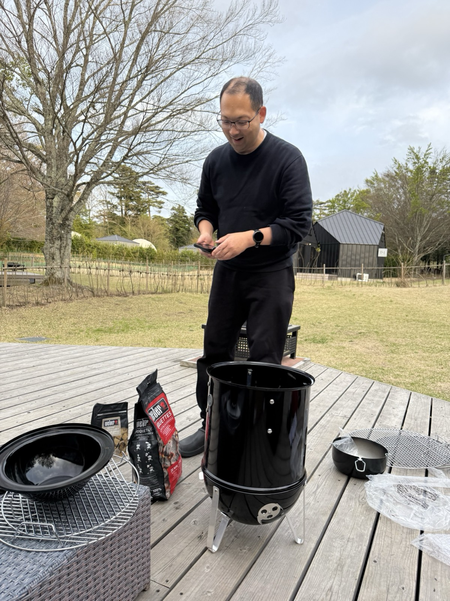

YORON BBQ MANIFESTO
「飲みに行こう」が、
「バーベキューしよう」になる世界へ。
YORON BBQは、本場アメリカンBBQのロジックを
日本の暮らしに最適化しなおした、新しいバーベキューです。

なぜ、バーベキューなのか
「飲みに行こう」という言葉が、日本で長く愛されてきた理由は明確です。誘いやすく、想起しやすく、共通体験のハードルが低いから。
けれど、その場で得られるのは「会話」と「酔い」が中心。料理は脇役で、火と食材と時間と空気を味わう体験ではありません。
一方で、日本の一般的なバーベキューは「外でやる焼肉」になりがちです。直火・高温・タレ。外は真っ黒、中はカスカス。「面倒なわりに美味しくない」という諦めすらある。
その両方とは別の場所に、蓋を閉めた炭のグリルで、間接熱と温度の科学で火を通す世界があります。普通の食材が、異常に美味しくなる——この体験を、日本の「飲みに行こう」と同じ手軽さで言い合えるところまで日常化すること。それが、私たちのすべてです。
『バーベキュー』とは別の食べ物です。"
YORON BBQという名前について
名前の由来は、鹿児島県・与論島。Founderである石原杏莉（あんちゃん）の火のルーツであり、「飲みに行こう」と同じくらい自然に「バーベキューしよう」と言い合う土地です。
中国料理や台湾ラーメンがそうだったように、「地名×料理」の名前は文化として広がっていきます。本場アメリカンBBQを、与論島から。2026年7月16日、3人でこの名前に決めました。
ちなみに「SLOW FIRE（急がない火）」は、この考え方につけた思想のレーベル名です。急がずに、じっくり火を通す。私たちが商品を選ぶときの基準も、ここにあります。
なぜアメリカンBBQは、日本に根づかなかったのか
アメリカンBBQは10年、20年前から日本に入ってきているのに、浸透していません。理由は「認知が足りない」からでも「インフルエンサーがいない」からでもなく、構造とカルチャーにあります。
BBQが文化になった国は、例外なく圧倒的な肉食の国です（アメリカ・オーストラリアは肉が魚介の約5倍、アルゼンチンは約14倍）。対して日本は、肉と魚介の消費がほぼ1:1。少しずつ多品種を、熱々で食べたい国です。12時間かけて塊肉1種を育てるスタイルは、日本の暮らしにも、BBQ場の利用時間にも収まりません。
だから私たちは、模倣をやめました。焼き方のロジックはアメリカンBBQを継承しつつ、時間は暮らしに収まる長さに、食材は魚・野菜・日本各地の食材へ。生魚の調理法をここまで磨いてきた日本だからこそ、世界のどこにもないバーベキューがつくれると考えています。
YORON BBQ、5つの原則
3〜4時間で完結する
作って、食べて、楽しんで、全部込みで3〜4時間。日本の暮らしとBBQ場の利用時間に収まる時間設計にします。
熱々を、出来立てで
冷めた塊肉にソースをかけるのではなく、出来立てを、食べる速度に合わせて次々と配る。日本人の本音は「少しずつ、多種多様なものを、常に熱々で」です。
多品種——肉だけじゃない
肉2〜3種＋副菜＋シーフード。しかも、いつものスーパーの食材でいい。非日常のままでは、文化になりません。
創作を、解放する
万能スパイスの「誰が焼いても同じ味」を超える。その第一歩が、BBQ先進国オーストラリアのプレミアム・ラブを正規輸入することでした。
AI時代の、人間関係の最強のハブになる
ゴールは焼くテクニックの普及ではありません。AIとテクノロジーで生活が便利になる引き換えに、リアルな人間関係の希薄化が加速していく——だからこそ、同じ火を囲んで空間を共有する「場」が決定的な意味を持ちます。言葉を無理に紡がなくていい、無言の時間すら心地よい「安心の場」。「今夜飲みに行こう」と同じ手軽さで「今週末BBQしよう」と言い合えるカジュアル・カルチャーの創造が、僕らの使命です。

3つの場をつくっています
学ぶ場（FIRESIDE）
バーベキューの「火入れの科学」と「ホストの哲学」を、検索しながら学べる教科書。専門記事、部位×調理法ガイド、食材リストまで。
計画する場（プランナー・BBQ場検索）
思いついた瞬間を計画に変えるツール。5分で食材・場所・招待状まで揃う。関東24スポットを独自基準で比較しました。
道具を揃える場（SHOP）
Low n Slow Basics・Butcher's Axe・Stef the Maori — オーストラリア発の本格派BBQラブを日本に正規輸入。「ただ買う」ではなく「思想と共に買う」場所です。
提供したい価値は「美味しい」を超える
バーベキューで本当に届けたいのは、「美味しい」という言葉では表現しきれない何かです。料理を超えた、場の体験。
火を囲んで時間を過ごしたとき、会話の質が変わる。沈黙が許される空気になる。誰かと同じ火を見ているだけで、関係性が静かに更新されていく。
テクノロジーで生活が便利になる引き換えに、リアルな人間関係は希薄になっていきます。だからこそ、同じ火を囲んで空間を共有する場に意味がある。言葉を無理に紡がなくていい、無言の時間すら心地よい場を——私たちはそこを目指しています。
誰のために
日常を、もう一歩深く生きたい人。仕事や趣味にアグレッシブに向き合いながら、それでも「もう少し、ゆっくりした時間」を取り戻したい人。
バーベキュー初心者でも、本格派でも、関係ありません。YORON BBQは「バーベキューの素晴らしさにまだ気づいていない人」と「もっと深めたい人」の両方のためにあります。
目標は、日本全国民の33%がYORON BBQを味わったことがある世の中をつくること。その最初の一歩が、ラブを1本手に取ってみることでも、私たちはいいと思っています。